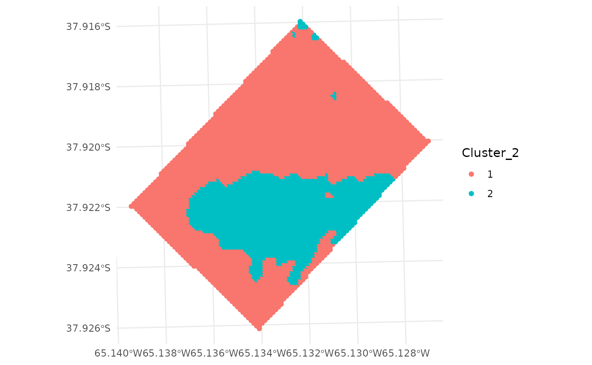

Multivariate zone delineation can be done using kmspc
function, whereas univariate zone delineation can be done with
fyzzy_k_means function.
Multivariate function implements the protocol proposed by Córdoba et al. (2016), which performs a
clustering with the kmeans function using as an input the
spatial principal components (sPC) of the data. The function requires an
sf object with the data to be clustered, and more than one
numeric variable. The function by default returns a list with the
following components: - summaryResults: a
data.frame with - indices: a
data.frame with indices to help to chose the optimal number
of clusters. - cluster: the cluster number assigned to each
observation.
For this example we will use the wheat dataset that
comes with the paar package. The data.frame
has apparent electrical conductivity (ECa) meassured at two depths,
elevation data, soil depth, and wheat gran yield. All variables have
been interpolated to an unique grid and then merged in a single
data.frame.
plot(wheat_sf)The function kmspc requires the sf object
with the data to be clustered, and the number of clusters (zones) to be
delineated. For the sPC process, is necessary to specify the distance in
wshich observations will be considered neighbors. The ldist
and udist arguments specify the lower and upper distance
thresholds, respectively. The explainedVariance argument
specifies the minimum value of explained variance that the Principal
Component to be used for the cluster process should explain. The
center argument specifies if the data should be centered
before the sPC process (default TRUE).
# Run the kmspc function
kmspc_results <-
kmspc(wheat_sf,
number_cluster = 2:4,
explainedVariance = 70,
ldist = 0,
udist = 40,
center = TRUE)
#> Warning: All numeric Variables will be used to make clustersTo help the user to chose the optimal number of clusters, the
function returns a data.frame with indices
(Xie Beni, Partition Coefficient,
Entropy of Partition, and Summary Index). The
Summary Index is a combination of the indices to obtain a
measure of the information reported by each index. In this example, the
optimuin number of cluster is 2. For each index, lower the value better
the clustering. More information can be found in Paccioretti, Córdoba, and Balzarini (2020).
kmspc_results$indices
#> Num. Cluster Xie Beni Partition Coefficient Entropy of Partition
#> 1 2 3.521080e-05 0.9611962 0.06490329
#> 2 3 5.479198e-05 0.9391147 0.10430166
#> 3 4 5.826635e-05 0.9293043 0.12351022
#> Summary Index
#> 1 1.281143
#> 2 1.597505
#> 3 1.713109The cluster for each observation can be found in the
cluster component of the kmspc object. The
cluster component is a data.frame with the
cluster number assigned to each observation.
head(kmspc_results$cluster)
#> Cluster_2 Cluster_3 Cluster_4
#> [1,] "1" "2" "4"
#> [2,] "1" "2" "4"
#> [3,] "1" "2" "4"
#> [4,] "1" "1" "4"
#> [5,] "1" "1" "4"
#> [6,] "1" "1" "4"The clusters can be combined to the original data using the
cbind function.
wheat_clustered <- cbind(wheat_sf, kmspc_results$cluster)This cluster can be plotted with the plot function.
plot(wheat_clustered[, "Cluster_2"])Also, ggplot can be used to plot the clusters.
ggplot(wheat_clustered) +
geom_sf(aes(color = Cluster_2)) +
theme_minimal()